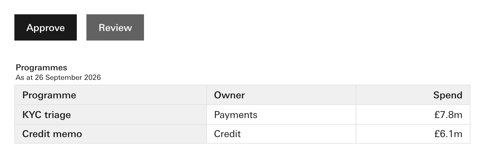
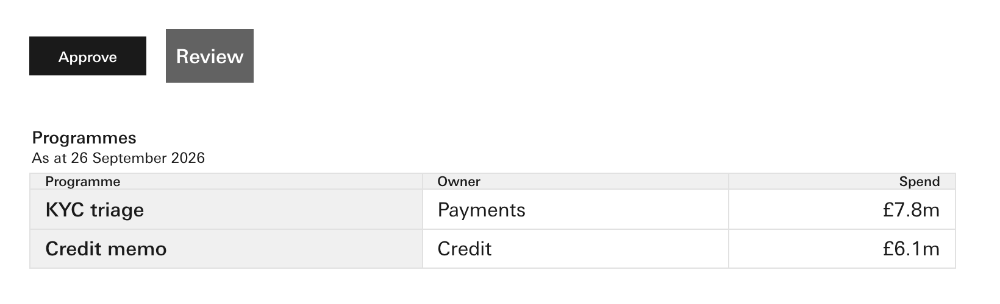
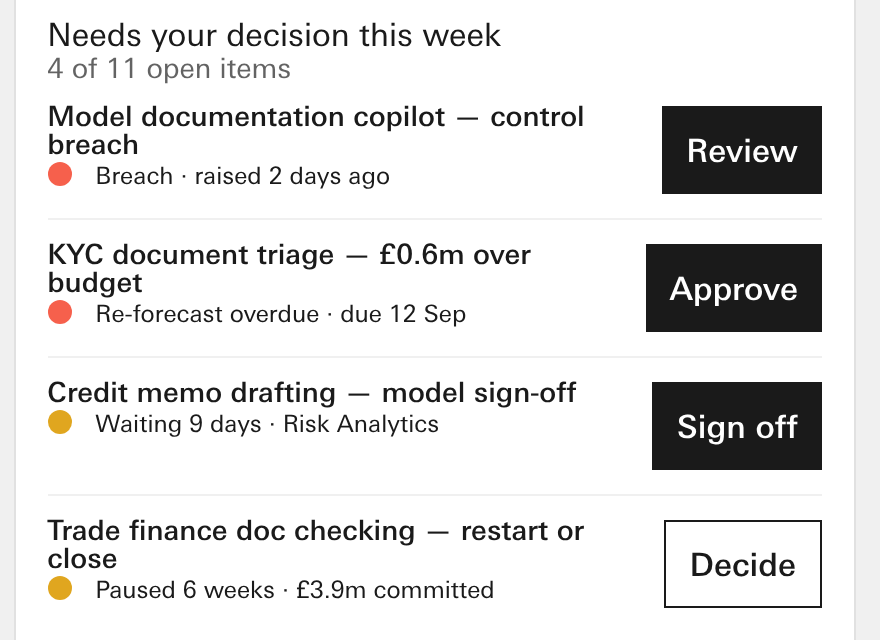
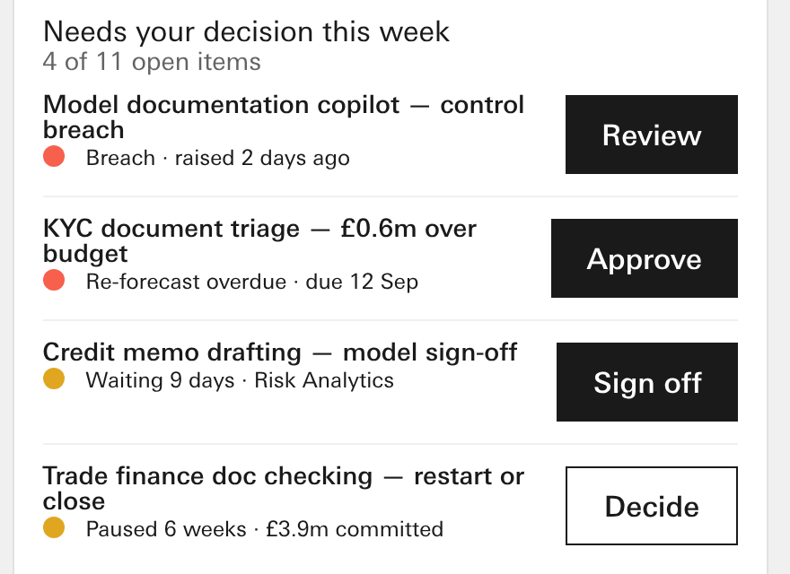

Half A
The page never sizes a part. Width included.
At 14:21 you said yes to call 23: a part is always drawn at its own reference size, with a check that measures it. The skill's rule goes one step further and names width as well as height and type. No ruling names width yet, and the verifier flagged that as the one widening that is Claude's, not yours.
1 · The same canon parts, with and without page sizing
A test page built from canon's own Button and Table, rendered at your seat. Below it, the same page with three lines of page CSS that shrink the parts. The width line is copied from #288's real page.

- Approve 104 × 44px, type 16px
- Review 96 × 44px, its own minimum width
- Headings 32.6px tall, type 16px
- Own-size check 0 findings

- Approve 96 × 32px, type 12px
- Review 71.9px wide, its 96px minimum taken away
- Headings 13px tall, type 11px
- Own-size check 9 findings, one of them the width
2 · A real page: #288's composed dashboard, where the width came from
Rendered at 1440 at your seat. First, the page as it was built, with its own .mini class on the buttons. Then the same page with only that class taken off, so each button keeps its own size.

- Review 79.9px · Approve 88.2px · Sign off 84.6px · Decide 79.2px
- All four under the button's own 96px minimum

- Review 96px · Approve 104.2px · Sign off 100.6px · Decide 96px
- Each at or above its own minimum
3 · Where the rule costs something: the app shell
Two cold runs of the CEO Common prompt, as shipped, at 1440 × 1000. The side-nav shell is a fixed 640px-tall frame in canon. One v1.0.13 run set it to 1000px itself; all three candidate runs kept it at 640px because the new rule says a page never resizes a part.

- Fills the screen, but only because the page broke the rule.

- About 360px of blank below the frame.
- The fix the weekend's reports name: a full-screen form of the shell in canon, with the skill's wording following it.
Ratify "the page never sizes a part", with width included?
Recommend yes.
Because it is what the own-size check measures, and your Thursday worry, buttons and table headings "way smaller than they should", came from pages sizing parts. Where a part is the wrong size for a page, the fix is a new form of the part, like the full-screen shell, not a page rule.